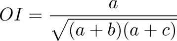
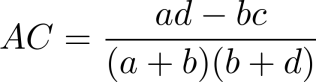
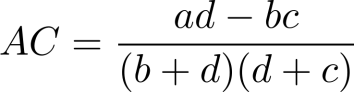
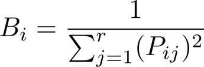
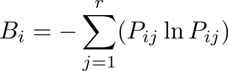
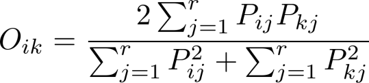

This tutorial is based on a post (in Chinese) available at: http://blog.sciencenet.cn/blog-255662-1239853.html
Ecological niche refers to resource allocation (Jintun Zhang, 2004), and is important in many aspects, for example, ordination analysis, community assembly etc. At the community scale, niche is usually quantified by the occurrence and co-occurrence of species. Although a great number of studies have focused on this topic in the past three decades ((in particular in the Chinese literature, e.g., C. W. Sun and S. D. Zhao, 1996; C. H. Guo et al. 1997; Z. M. Shi et al. 2001; J. L. Li and J. T. Zhang, 2010; N. J. Wang et al. 2010), a computer programme for conducting the relevant analysis is lacking. Here we describe spaa, which stands for SPecies Association Analysis, an R package for conducting suche analysis.
1. The installation
spaa is an open source package written in R, available on CRAN.
To install, enter the command install.packages("spaa") in the R console, R will ask you to select a CRAN mirror, and the package will be automatically downloaded and installed.
The developing version is available at https://github.com/helixcn/spaa, to install it, type:
2. Functions and datasets in spaa
2.1 Main Functions
-
data2mat: convert field records into a species-site matrix
-
freq.calc: calculate the relative abundance
-
niche.overlap: calculate the niche overlap between all the species pairs
-
niche.overlap.boot: bootstrap the confidence intervals for niche overlap
-
niche.overlap.boot.pair: bootstrap the confidence intervals of niche overlap for each pair of species
-
niche.overlap.pair: calculate the niche overlap for each pair of species
-
niche.width: calculate niche width
-
plotlowertri: visualize distance/similarity matrices
-
plotnetwork: visualize network correlation
-
sp.assoc: calculate the overall species association
-
sp.pair: calculate the association between each pair of species
-
sub.sp.matrix: subsetting the community matrix based on relative frequencies
2.2 Embedded datasets
-
splist: An example dataframe of species, genus, family
-
datasample: An example community matrix (wide format)
-
testdata: An example community dataset (long format)
3. Calculating niche width
3.2 Calculating species associations
Interspecific associations, including association among all the species and specific association between each pair of species could be computed using spaa (Zhou Xianye et al. 2000; Shi Zuomin et al. 2001; Zhang Siyu and Zheng Shiqun 2002; Zhang Zhiyong et al. 2003; Kang Bing et al. 2005; Wang Wenjin et al. 2007; Wang Naijiang et al. 2010).
3.2.2 Significance test of inters-pecific associations
The association between each pair of species could be calculated using the following code:
In this test, a 2X2 contingent table is usually used. If there are species X and species Y occurring in the plots, a, b, c, d denote co-occurrence and non-occurrence between them, respectively (Kent M., 2012, page 114):
-
a: Number of plots where both species X and Y are present;
-
b: Number of plots where X is present but not Y ;
-
c: Number of plots where Y is present but not X;
-
d: Number of plots where neither X nor Y is present.
-
n: Total number of plot n = a+b+c+d
The Yates-corrected Chi-square is used when determining whether there is a significant association for small samples (Kent M., 2012, page 114).
The output is a list containing the following elements:
-
chisq: chi square matrix
-
chisqass: chi square matrix information
-
V: Value indicating species association is positive or negative
-
Ochiai: Ochiai’s index
-
Dice: Dice’s index
-
Jaccard: Jaccard’s index
-
Pearson: Pearson’s correlation
-
Spearman: Spearman’s rank correlation
-
PCC: Point correlation coefficient
-
AC: Association coefficient
The equations are shown below:
1. Yates-corrected chi-square test for significance (Equation 6), see chisq and chisqass
Note: - chisqass is the Chi-square - chisq is the Chi-square with Yates’ correction for small samples (Kent M., 2012, page 114)
2. V ratio (Equation 7) V

Indicating whether the species association is positive (>0) or negative (<0)
3. Jaccard’s index (Equation 8) Jaccard:

4. Ochiai index (Equation 9) Ochiai:

5. Dice Index (Equation 10) Dice:
6. PCC: Point Correlation Coefficient PCC (Equation 11)
7. AC Association coefficient (Equation 12) AC

- If
a*d < b*c and d >= a, then (Equation 13):
- If
a*d < b*c and d < a, then (Equation 14):

8. Spearman’s rank correlation coefficient Spearman (Equation 15)

9. Pearson’s correlation coefficient Pearson (Equation 16)

3.3 Calculating niche width
Niche width is commonly measured by the Levins or Shannon indices.
1. Levins niche width index (Equation 17)

2. Shannon’s niche width index (Equation 18)

where B_i is the niche width of the ith species, j denotes jth plot, and r denotes the number of plots.
The function niche.width() can calculate the niche width of each species. The arguments are: niche.width(mat, method = c("shannon", "levins")), where mat is the sample-species matrix and method is eighther "shannon" or "levins".
3.4 Niche overlap
niche.overlap() calculates the niche overlap coefficients between all species pairs, including: "levins" (Note this is different from niche width), "schoener", "petraitis", "pianka", "morisita", etc. The output is a distance matrix. These indices are defined as below:
1. Levin’s niche overlap index (Equation 19)

2. Schoener’s niche overlap index (Equation 20)
3. Petraitis’s niche overlap index (Equation 21)
4. Pianka’s niche overlap index (Equation 22)
5. Czechanowski’s niche overlap index (Equation 23)

6. the simplified Morisita index (Equation 24)

where O_ik is the niche overlap of species i and speciesk, P_ij and P_kj are the number of individuals of species i and species k in the jth sample, respectively, r is the total number of plots (sites), and e is the base of the natural logarithm.
Example:
data(datasample)
niche.overlap(mat, method = c("levins", "schoener", "petraitis", "pianka", "czech", "morisita"))
where mat is the community matrix and method is either: "levins", "schoener", "petraitis", "pianka", "czech" or "morisita".
niche.overlap.pair() computes the niche overlap between a specific pair. For example:
niche.overlap.pair(vectA, vectB,
method = c("pianka", "schoener",
"petraitis", "czech",
"morisita", "levins"))
Where VectA and vectB are two vectors indicating the number of individuals of species A and species B in the plots, respectively, and method is either "pianka", "schoener", "petraitis", "czech", "morisita", "levins".
3.5 Bootstrap of the confidence intervals for niche width
The confidence interval of niche overlap between each pair of species could be estimated using bootstrap by niche.overlap.boot(), which is show below:
niche.overlap.boot.pair(vectorA, vectorB, method = c("levins",
"schoener", "petraitis", "pianka", "czech", "morisita"),
times = 1000, quant = c(0.025, 0.975))
where mat is the input species distribution matrix. method is the niche overlap index, times is the times of bootstrap to be performed, and quant is the quantile of the niche overlap index. By defaults,the 95% confidence interval (0.025 and 0.975) is used.
niche.overlap.boot() is a wrapper of niche.overlap.boot.pair(). In most cases, users do not need to call niche.overlap.boot.pair().
The columns are as follows.
- Row names, Species pair
Castanopsis.eirei-Schima.superba for both columns, indicating the corresponding species pair
-
Observed: the valued niche overlap index used
-
Boot mean: the mean of bootstrap niche overlap index
-
Boot std: the standard deviation (sd()) of the niche overlap index
-
Boot CI1: the lower quantile of the niche overlap index, the default is the 0.025 quantile
-
Boot CI2: the upper quantile of the niche overlap index, the default is the 0.975 quantile
Note: If a species is missing, NaN will appear during in the bootstrap results, which indicates that the denominators is 0.
3.6 Visualisation
3.6.1 Semi-matrix plots
The spaa package also provides some functions for visualising the results of species association.
The arguments are:
plotlowertri(input, valuename = "r",
pchlist = c(19, 17, 15, 1, 5, 2, 7),
interval = 6, cex = 1, ncex = 1,
int =1.2, add.number = TRUE,
size = FALSE, add.text = FALSE,
show.legend = TRUE, digits = 2)
A correlation coefficient matrix or a distance matrix could easily be visuallized using this function (Figure 1).
3.6.2 Species association network
Networks can be used to show the interconnectedness of species, i.e., in different colors, line widths, or line styles connecting the species to another other, or the similarity of species composition between sites. spaa’s plotnetwork() can visualize the relationship (Figure 3). However, network plot should not be used to represent the relationship between a large number of species, for example, more than 10, it could be too crowded.
A network plot generated using plotnetwork()
3.7 Other functions
3.7.2 Other useful functions
Note: These functions were available before the version 0.2.0, but have been removed from the development. I am planning to re-include them in spaa in the near future.
-
lgeodist(), geodist() calculates the great circle distance between two locations given their latitude and longitude;
-
deg2dec() converts degrees, minutes and seconds to decimal degrees;
-
dist2list() converts distance matrix to a data.frame, similar to simba::liste()
-
turnover() calculates species turnover, and could be used in computing beta diversity for forest dynamic plot
-
lab.mat() and XYname() can generate the names of quadrats of a forest dynamic plot.
-
add.col() will add a column to the target dataframe, if give there is one column in common among the two data.frames. Note this is experimental and users are encouraged to call merge().
-
data2mat() converts dataframe to community matrix, similar to the function picante::sample2matrix(), see Section 3.1.2 of this tutorial for the conversion if there is a decimal number in the sample.
-
list2dist() Convert pairwise list to distance matrix, a inversion to dist2list().
Acknowledgements
We thank Qiong Ding, Jihong Huang, and Dr. Zongshan Li for their help in the development of the package, Jinze Ma, Xueni Zhang, Jun Jiang, Meixiang Gao, Xiaofeng Fang, Yinyou, Wei Li, Alfredo H. Zúñiga Á., ÍsisArantes, Patricia Martínez, Wilson Martins da Silva, Jessica L. Sabo, Maud CHARLERY, Du Zhongyu, Diego Procopio, Zhan Xiaohao, Luis Fernando Gatica Mora, Zhao Wenxi, Xiao Zhengli, Jin Chao, Xing Bingwei, Pan Da, Vicente García-Navas, Jiang Huan, Clara Ruiz. Wang Lulu, Clara Ruiz González, Guo Jiaxing, Du Yuanbao, Zhong Yunjie, Wang Chenhe, Xu Heng, Zhang Wei, Hao Minhui, Suhridam Roy, Wang Yuan, Han Dayong, Yang Fan, Yao Xueqin, Wang Jing, Yang Haitao, Zheng Guiling, Yue Pengpeng, Mary Ann McLean, Bao Zhigui, Russell Bicknell. Joan Giménez Verdugo, Angela Andrea Camargo Sanabria, Xiaodan Zhao, Ramiro Logares Haurié, Simone Cappellari Rabeling, Caitlin Keating-Bitonti. Dr. Kurt Hornik and Prof. Brian Ripley, who provided some comments and suggestions on the compilation of the package, are gratefully acknowledged.
References
Ackerly, D.D. (2003) Community assembly, niche conservatism, and adaptive evolution in changing environments. International Journal of Plant Sciences, 164:S165-S184.
Chase, J.M. (2003) Community assembly: when should history matter? Oecologia, 136:489-498.
Cornwell, W.K. & D.D. Ackerly (2009) Community assembly and shifts in plant trait distributions across an environmental gradient in coastal California. Ecological Monographs, 79:109-126.
Pavoine, S. & M.Bonsall (2011) Measuring biodiversity to explain community assembly: a unified approach. Biological Reviews, 86:792-812.
Kent, M. (2011). Vegetation description and data analysis: a practical approach. John Wiley & Sons.
Papers in Chinese are not listed here.